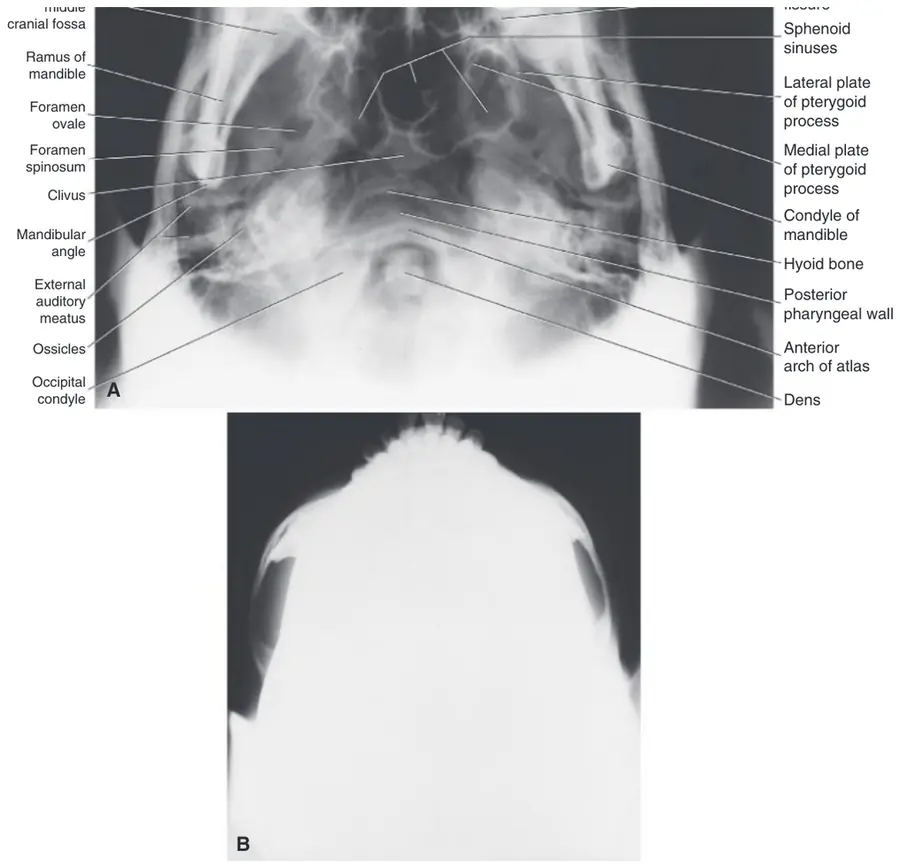
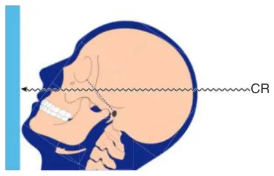

نسخه استخراجشده؛ ترجمه یا تأیید علمی انجام نشده است. وضعیت: captured
SMV چه چیزی نشان میدهد؟ «قاعدهی جمجمه، قوسهای زیگوماتیک، و سینوسهای اسفنوئید.»

سه اندیکاسیون: نمایش تغییرات استخوانی از تومورهای قاعدهی جمجمه، شکستگی قوسهای زیگوماتیک، ارزیابی یکپارچگی و هوادهی سینوسهای اسفنوئید.
و جایگاه امروزیاش: «در عمل امروزی، این اهداف تصویربرداری عمدتاً با CT به دست میآیند، که کاربرد پروجکشن SMV را کاهش داده است.»
وضعیتدهی: بیمار با گردن «تا حد ممکن به عقب کشیده» تا خط کانتومئاتال موازی گیرنده شود؛ گیرنده موازی صفحهی فرانکفورت و عمود بر صفحات ساژیتال و کرونال؛ و صفحهی ساژیتال عمودی.
پرتو مرکزی: عمود بر گیرنده، «از زیر مندیبل به سمت ورتکس جمجمه — از همینجا نام SMV — و مرکز شده حدود ۲ سانتیمتر قدامیتر از خطی که کندیلهای راست و چپ را به هم وصل میکند». فاصلهی منبع تا گیرنده: ۱۰۰ سانتیمتر.
و سه معیار تصویر درست: صفحهی ساژیتال عمودی پروجکت میشود — خطی خیالی از فضای بیندندانی انسیزورهای مرکزی ماگزیلا، از میان سپتوم بینی، تا میانهی قوس قدامی اطلس و دنس — و باید تصویر را به دو نیمهی متقارن تقسیم کند، صفحات کورتیکال باکال و لینگوال مندیبل به شکل خطوط اوپک یکنواخت پروجکت شوند، و قاعدهی میانی جمجمه خلف کام سخت پروجکت شود.
و حالا نکتهی درخشان این پروجکشن — دو اکسپوز متفاوت برای دو هدف:
چه چیزی نشان میدهد؟ «سینوسهای پارانازال، عمدتاً سینوس ماگزیلاری و به میزان کمتر سینوس فرونتال و سلولهای اتموئید. همچنین استخوانهای میدفاسیال و اربیتها.»

دو اندیکاسیون: ارزیابی سینوسهای پارانازال — بهویژه ماگزیلاری، اتموئید و فرونتال، و ارزیابی شکستگیهای میدفاسیال، بهویژه تریپاد و لوفور.
ولی جایگاه امروزیاش: «این اهداف تشخیصی امروز بهتر با CT برآورده میشوند. بنابراین معیارهای تناسب کالج رادیولوژی آمریکا پروجکشن واترز را معمولاً برای ارزیابی تروما، اربیتها و بیماری سینونازال مناسب نمیداند.»
وضعیتدهی — عدد کلیدی: گیرنده جلوی بیمار و عمود بر صفحهی ساژیتال؛ سر بیمار رو به بالا کج میشود تا خط کانتومئاتال زاویهی ۳۷ درجه با گیرنده بسازد. و روش عملی رسیدن به آن: «چانه در تماس با گیرنده و نوک بینی حدود ۱ تا ۱٫۵ سانتیمتر دور از گیرنده». و یک نکته: «اگر دهان بیمار باز باشد، سینوس اسفنوئید سوپرایمپوز روی کام دیده میشود.»
پرتو مرکزی: عمود بر گیرنده و «از استخوان اکسیپیتال به سمت ناحیهی منتال مندیبل — از همینجا اصطلاح اکسیپیتومنتال — و مرکز شده روی سینوسهای ماگزیلاری». فاصلهی منبع تا گیرنده: ۱۰۰ سانتیمتر.
و تصویر حاصل — سه معیار: «نمای واترز یک پروجکشن PA مایل است. ساختارهای قدامی با بزرگنمایی کمتر و بالاتر نسبت به ساختارهای خلفیتر پروجکت میشوند»، صفحهی ساژیتال باید تصویر را به دو نیمهی متقارن تقسیم کند، و «ریج پتروس تمپورال باید زیر کف سینوس ماگزیلاری پروجکت شود». و: «کف اربیت و ریم اربیت به شکل دو خط رادیواوپک تیز با ریم بالاتر نمایش داده میشوند.»
یک اندیکاسیون مشخص: «ارزیابی بیماران با شکستگی مشکوک کندیل و گردن کندیل.» ولی باز هم: «در عمل امروزی، ارزیابی رادیولوژیک ترومای ماگزیلوفاسیال بهتر با CT انجام میشود.»
وضعیتدهی — عدد کلیدی: گیرنده جلوی بیمار و عمود بر صفحهی ساژیتال؛ سر بیمار رو به پایین کج میشود تا خط کانتومئاتال زاویهی ۳۰ درجه با گیرنده بسازد؛ و «برای بهتر دیدن کندیلها، دهان بیمار باز میشود تا سرهای کندیل تحتانیتر از برجستگی آرتیکولار قرار گیرند».
و یک نکتهی ارتباطی که فراموش میشود: «هنگام درخواست این تصویر برای ارزیابی کندیلها، لازم است «تاون معکوس دهانباز» را صریح مشخص کنی تا از نمای استاندارد تاون از اکسیپوت متمایز شود.»
پرتو مرکزی: عمود بر گیرنده و از میان صفحهی ساژیتال، «مرکز شده در سطح کندیلها». فاصلهی منبع تا گیرنده: ۱۰۰ سانتیمتر.
و تصویر حاصل — چهار معیار: صفحهی ساژیتال (خطی خیالی از میانهی فورامن مگنوم و قوس خلفی اطلس، از میان میانهی پل بینی و سپتوم بینی) باید تصویر را دو نیمهی متقارن کند، «ریج پتروس باید در بخش تحتانی استخوان اکسیپیتال سوپرایمپوز شود»، «سرهای کندیل باید تحتانیتر از برجستگی آرتیکولار پروجکت شوند»، و «گردنهای کندیل کشیده به نظر میرسند».
و ارزش تشخیصیاش: «این پروجکشن شکستگی سر و گردن کندیل را نشان میدهد و اطلاعاتی دربارهی جابهجایی مدیولترال قطعهی شکسته فراهم میکند.»